Bitácora: Bogotá y sus historias
Table of Contents
- 1. Introducción
- 2. Propuesta de proyecto final
- 3. Encuesta
- 4. Entradas
- 4.1. : Judío Errante en Eje Ambiental
- 4.2. : Fumar no mata
- 4.3. : Refugio contra el cemento
- 4.4. : Apocalipsis ZombieAmbiental
- 4.5. : Nadie cree en el Apocalipsis ZombieAmbiental
- 4.6. : El proceso
- 4.7. : TransmiFeminismo
- 4.8. : La Edad Dorada
- 4.9. : Circo itinerante de Movilidad Pública
- 4.10. : Mercaderes del pasado
- 4.11. : Basquiat farsante
- 4.12. : La Guerra fría (cuadro de la política bogotana)
- 5. Notas lecturas
1 Introducción
Esta página constituirá la bitácora para el curso "Bogotá y sus Historias", cursado en la Fundación Universitaria Konrad Lorenz.
| Estudiante: Jonatan Adolfo Ahumada |
| Docente: Estefanía Vanegas |
2 Propuesta de proyecto final
Para mi proyecto final me gustaría estudiar el tema de las catedrales o en general las iglesias que existen en Bogotá. Más allá de ir a visitarlas, me gustaria investigar qué información existe respecto a su estilo arquitectónico, sus funciones en la ciudad, y quiénes las contruyeron. Por ejemplo, ¿qué iglesias fueron construidas por jesuítas? ¿Cuáles fueron construidas por dominicos? ¿Existen leyendas sobre algunas de estas? ¿Quién las construyó y cómo tenían el conocimiento sobre su construcción? ¿Cuánto tardaron en construirse? etc.
Me gustaría ahondar en este tema porque me impactan estéticamente. Me parece que su construcción contrasta bastante con la arquitectura de las casas que hemos visto en el curso (por ejemplo, las que fueron hechas con ladrillos de barro). Además, me interesaría conectar esto, en la medida de lo posible, con el mito fundacional de la ciudad. Según lo visto en clase, hay una clara simbología religiosa imbuida en el mito de las 12 casas.
Según se vayan explicando los lineamientos del trabajo, delimitaré más el objetivo del estudio, pero este es el tema principal que me gustaría trabajar.
Se me ocurren dos opciones:
- leer bibliografía existente y presentar una síntesis (si es que existe y es accesible).
- simplemente hacer visitas, tomar fotos y hacer comentarios comparativos entre varias iglesias (probablemente sea lo más fácil).
2.1 retroalimentación
Delimité el trabajo a una muestra fotográfica con breves apuntes históricos. Aún debo escogér cuáles y cuántas iglesias son suficientes.
- medio: página web
Figure 1: Iglesia de Lourdes
3 Encuesta
4 Entradas
4.1 : Judío Errante en Eje Ambiental
Me parece auspicioso que la Libreria Lerner esté en el centro. A pocas cuadras hay una estatua de José Rufino Cuervo y, además, está rodeada de universidades. Contrario a lo que uno está acostumbrado, la Libreria es buena. Con esto me refiero a que es bueno su catálogo, cosa que no cabría explicar aquí. Pero, por ejemplo, si se compara con un Barnes & Nobles, se notará la diferencia en su catálogo. Supongo que tendrá que ver con las segmentación del mercado editorial según las lenguas. Es decir, el busto de Cuervo efectivamente ha tenido su influencia. Lamentablemente, a esa hora estaba vacío. Además, los sábados cierran temprano. Solo había unas cuantas almas.
Una profesora de unos 60 años con su "amiga" preguntaban por bibliografía sobre los judíos. Todo, lo que hubiere. Parece que preparaban una clase, pero se distraían al mismo tiempo. Eran 'godas', así como lo pintan en las nóvelas de RCN. No había muchas cosas sobre judíos, pero podían traerlas de afuera (guiño).
Luego, también entró un gringo. Preguntó por 'books in English' y lo dirigieron a una sección al lado del salón de literatura colombiana.
Es curioso estar rodeado de íconos nacionales y al mismo tiempo sentirse extrañado y expatriado.
Caminé el eje ambiental hasta llegar al Claustro del Rosario y luego tomé la séptima hasta el cruce con la 26.
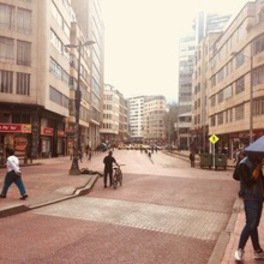
Figure 2: Eje ambiental
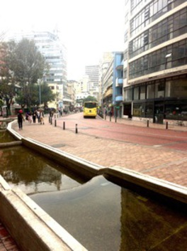
Figure 3: A la salida de la Librería Lerner
4.2 : Fumar no mata
Hoy pude levantarme "tarde" porque contaba con el carro para ir a la Universidad, o eso creía. Resulta que mi trayecto fue bastante fácil y el parqueadero estaba vacío, pero por efecto de la somnolencia nunca me detuve a pensar por qué. Jamás se me ocurrió. Lamentablemente, era el Día Sin Carro, cosa de la que no me enteré jamás ni por noticias, ni por el banner del Transmilenio que había tomado varias veces el día de ayer.
La utilidad de este Día es similar a la de dejar de fumar un solo día al año, cuando fumas dos cajas diarias. Le dije esto a un estudiante de matemáticas con el que estudio y me respondió:
– 'Qué rabón'
Nunca me refutó convincementemente, más alla de decir que "Sí, sirve un poquito".
Entro a clase de estructuras de datos y me tomé el tiempo de revisar la ley. No muy sorprendentemente, fue escogida por votación popular, y fue propuesta por Antanas Mockus, el 'tipo de la cultura'. Ahora bien, ¿qué sucede si sacas el carro y te detiene un policia? (suponiendo que no te obligue a sobornarlo sacando una pistola, como ya me ha pasado). Primero te multan con 416,000 COP y, además (porque esto no es suficiente), se llevan el carro a los patios. Esto último es una verdadera joya, porque el costo por día de los patios es sospechosamente elevado, sobre todo si se le suma el hecho de que el trámite para sacarlo de los patios también es infernalmente demorado (pierdes horas laborales o de estudio inevitablemente).
Me pregunto cómo es posible que constitucionalmente se pueda poner el consenso popular sobre la libertad de transitar sobre calles que uno paga, con el vehículo que uno paga. Con qué responden los depositarios de la sagrada moral: con trancones espantosos de Transmilenio en el Día Sin Carro.
La 'ola verde' ataca nuevamente. Su voz es legión, y es ley.
4.3 : Refugio contra el cemento
En el parque Sauzalito se pueden apreciar todo tipo de especímenes. Partenecen a las más diversos phillum y strata, pero todos tienen algo en común: quieren escapar del cemento que succiona su alma de lunes a viernes. A continuación, algo así como un recuento:
4.3.1 ancianos
Montados en las "máquinas de ejercicio" que la gobernación ha venido poniendo. La infección llegó hasta mi barrio, porque recuerdo que hace años eso no estaba ahí. Es un poco ridículo ver cómo usan estas "máquinas", porque no es ni cardiovascular, ni de fueza. Las máquinas ejemplifican la pésima idea de gobierno que rige la ciudad y que llega a su epítome en Peñalosa. Invertir en lo mínimo posible en dádivas "democráticas" que la gente toma por grandes lujos, cuando su utilidad o beneficio en realidad es nulo.
4.3.2 niños
El parque está lleno de cursos de natación, patinaje, artes marciales, tenis, basketbol, etc. No me es muy claro cómo funciona el asunto. Es decir, si las clases las ofrece el parque, o hay empresas privadas que alquilan el parque, o si lo usan gratis. Había varios quiscos, pero no pregunté nada, pues no hay nada más mediocre que la mirada ausente de quien supervisa los hijos de otras personas por dinero.
4.3.3 deportistas
En Bogotá hay una cultura de calistenia. Hoy había algunos tipos utilizando las barras del Sauzalito, pero no es mucho en comparación con el parque Simón Bolívar.
4.3.4 chica de 'libros al viento'
Me gusta esta idea, pero creo que nadie la usa. También noto ahí un problema y es que, si eres lector, no vas a recurrir a un quiosco arbitrariamente puesto para hacer tu lectura. Por otro lado, los libros que ponían no eran malos (salvo los del Centro de Memoria Histórica). Voy a poner fotos abajo. La chica que atendía procuraba tener buena actitud, pero también le aburría, porque había muy poca interacción. Es probable que tuviera una carrera universitaria, porque he visto que esas cosas pasen.
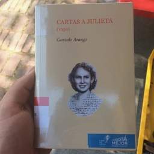
Figure 4: Julieta mató a Gonzalo Arango
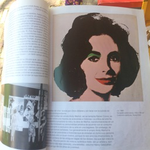
Figure 5: Libro sobre arte pop
4.3.5 vendedores
La mayoría de vendedores ambulantes se postran en el suelo a disfrutar el ambiente. Sé que deberían irradiar tranquilidad y reposo, pero en mí incitan tristeza, no sé por qué.
4.4 : Apocalipsis ZombieAmbiental
Hoy declararon que el pico y placa se extiende hasta el fin de semana y durante todo el día. Lo hacen para "preservar la salud de los ciudadadanos", dice el secretario de movilidad. La situación supuestamente se origina por condiciones ambientales atípicas. Bosa, Kennedy, Tunjuelito y Puente Aranda tienen alerta naranja.
La Secretaría de Movilidad admite que cerca del 40% de material particulado lo emiten los camiones. Es decir, el sector industrial. Sospecho que los ciudadanos comunes poco tendrían que ver con el otro 60%. ¿Quién permite que su carro bote humo tan negro como el de los colectivos, las tractomulas, los transmilenios? Por supuesto, la cifra asignada al Transmilenio milagrosamente tiene un solo dígito. Además, los sectores más contaminados son los que tienen menos poseedores de carros particulares. ¿Será que Kennedy y Puente Aranda concentran la mayoría de los carros particulares? ¿El norte se verá afectado con la misma severidad que este sector?
Este episodio es la repetición de "el de las motos", en el año pasado. El estado siempre velando por la seguridad de los ciudadanos. ¿Quién podrá ser el beneficiado de tal medida? ¿Están probando a ver qué tan pusilánimes somos?
4.5 : Nadie cree en el Apocalipsis ZombieAmbiental
Según las noticias, tendríamos que usar tapabocas al salir a la calle. La crisis ambiental es demasiado crítica. No obstante, salgo a la calle un domingo, el único día en que me han permitido usar mi vehículo, y veo que hay cicloruta en la Boyacá y en la 26. Es lo usual. El trancón perenne, como de costumbre. Las caras felices de los ciclistas, en las cuales hace falta un tapabocas, me repugnan. No son en lo más mínimo conscientes de la contradicción que entrañan. ¿Ese es realmente el comportamiento de alguien preocupado por el medioambiente? ¿No sería lo más lógico evitar en la mayor medida posible el aire viciado contenido en el Valle de Aburrá? (Y qué tiene que ver el Valle con el centro urbano de Bogotá?)
Me convenzo más de que la medida es solo para comodidad de quienes pueden financiar dos carros. Algo había que hacer para disminuir el trancón.
4.6 : El proceso
Por segunda vez a la semana voy al SuperCADE de la calle 26 con carrera 30. Esta vez también me voy con manos vacías. Llegué a las 9:00am y los turnos para liquidar impuestos de años anteriores ya habian 'colapsado'. La señora que da la información me exhortó a llegar más temprano. Es demasiado obvio que pagar los impuestos requiere de toda una planeación estratégica. Así como grande es la concurrencia para los containers que surten a venezuela, grande es la concurrencia para tramitar dilegencias estatales.
La primera vez que fui al SuperCADE, el tipo que me atendió me explicó que la diligencia que quería hacer tenía que ser personal. La página de internet no servía. El gobierno no puede molestarse en mantener una página web que le convendría a liquidez de su cartera, pero, eso sí, que suban los impuestos (a la canasta pública, a las gaseosas, a los artículos tecnológicos, o más bien repartamos la tierras -eso sí nunca han podido hacerlo-).
Seguramente como pagar los impuestos es responsabilidad del ciudadano (es una obligación ineludible, cuyas repercusiones son salvajes), no les importa dejarnos hacer filas en cuchitriles ineficientes. Todas las cosas del estado son una porquería, es un patrón que se me hace difícil cuestionar. Por ejemplo, este SuperCADE tiene las siguientes fallas:
- Hay solo 2 personas (y como 5 sillas) agendando los turnos de la entrada. Téngase en cuenta que la fila es larguísima.
- Antes de hacer la fila para sacar el turno uno debe entrevistarse con las personas de información. Por regla general, le exigirán a uno documentos innecesarios (mucha gente se devolverá solo por eso).
- Casi todo lo importante (pagar impuestos antes de que le hagan algo a uno) requiere agendar una cita telefónica.
- Los menús telefonicos son infernalmente tediosos y una vez uno los termina lo someten a una espera sin fin, despuúes de la cual muchas veces te cuelgan.
- El lugar es sucio.
- Las señas de la instalación están en desuso (por ejemplo, una cartelera aérea aferrada al cielo raso), en vez de eso se montan quioscos improvisados con señas impresas en lotes y mal cortadas.
- A la entrada hay gente desconocida que ofrece los servicios de 'predial' y 'vehículo'. Eso ya de por sí indica claramente qué es lo que le espera a uno.
Conclusion: el gobierno no solo esta dirigido por corruptos, sino que es altamente ineficiente incluso en su operación más básica (recolectar plata). ¿Es normal tener que ir dos veces (y contando) para hacer una dilegencia tan elemental? ¿Quién tiene el tiempo de ir tantas veces a perder el tiempo? Recordemos que hay que coger Transmilenio o trancón para ir a perder el tiempo. Podríamos también ir en bicicleta, pero es muy arriesgado dada la crisis ambiental.
4.7 : TransmiFeminismo
Tomé el bus M86 desde la estación CAN, para llegar a la parada de la séptima con 63. Lo tomé a las 8 AM, así que estaba lleno, pero no bajo las condiciones inhumanas que se viven en hora pico (por ejemplo, 7:00AM). Durante todo el trayecto estuve directamente al frente de un asiento rojo. Digamos que estuve 20 minutos en esa posición. Aforturnadamente, la persona que ocupaba el asiento se levantó para bajarse. Naturalmente, al estar lleno, la persona duro de pié a la salida de su asiento (directamente al frente mio, una posición incómoda para los dos) un buen tiempo, esperando que las otras personas bajaran del bus. Fueron cerca de unos 2 minutos. Ahora viene lo importante.
Cuando la persona pudo por fin quitarse de al frente mío, me dispuse a sentarme en mi legitimo puesto, pero justo antes de sentarme veo una cartera resbalarse desde el espaldar del asiento hasta la silla propiamente dicha. Una mujer que estaba al lado mío impidió que tomara mi puesto sin ningún asco por su propia persona. Estuve al punto de amonestarla, pero decidí que no valía la pena, porque ellos son legión.
+-------------> Puesto libre
|
+--+ +--+ +--+ +--+
|xx| |xx| | | |xx|
+--+ +--+ +--+ +--+
Mujer Yo
Algunas otras cosas sobre el Transmilenio:
- los policias no hacen nada (dejan que a gente se vuele)
- los vendedores poseen mayor estatus moral que uno
- los coordinadores no hacen nada cuando la gente no hace fila
- las personas son incapaces de organizarse para entrar al Transmilenio
- las mujeres creen que los hombres están para servirles (¿es esto antifeminista o feminista?: depende por completo de la conveniencia del observador)
- nadie pregunta si se va a bajar en esta parada también, simplemente empujan de una vez
- los que entran no dejan que la gente salga
- la gente que espera un bus no se quita del frente aun cuando no necesita entrar al bus que llega
- la gente que quiere a entrar al bus que llega y no alcanza no se quita de al frente cuando el bus se va. Es decir, se vuelan y se repite 8)
4.8 : La Edad Dorada
La exposición del Museo de Bogotá sobre las fotos familiares fue súper aburrida, pero por lo menos tuve una muestra de 'ultragodismo'. Me llamó la atención el número de fotos de gente caminando sobre la séptima. Sin importar su edad, todos lucián igual. Era un especie de uniforme, que con alegría anunciaba las bondades de la civilización. Los hombres vestían traje negro y las mujeres sus vestidos. Obviamente, en las fotos no sale ningún indio o ningún indigente, así que la ciudad parece tener bastante solemnidad según las fotos. Las calles se ven menos pobladas y en general la gente no tiene la cara de becerro sacrificial que se aprecia diariamente. Seguro solo es la foto.
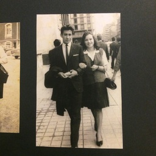
Figure 6: El "uniforme"
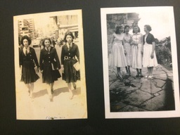
Figure 7: Las delicias de Carreño
Otra cosa que me llamó la atención es la calidad de las fotos. Eran fotos muy buenas. Los resultados no se comparan con la impresión de fotos digitales de hoy. Incluso hay una especie de folleto de un negocio de revelación de fotos: Duperly & Son's (nótese el nombre en inglés). Tiene un aire paradisiaco. Tengo una afición por las cosas godas.
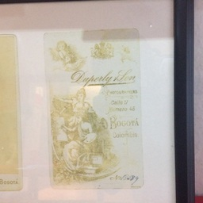
Figure 8: La Edad Dorada
4.9 : Circo itinerante de Movilidad Pública
Sobre la carrera 13 con 63 presencié un fenómeno social muy extraño. Es una política de la ciudad muy parecida a la de los "conos rojos" que abochornan a los conductores mal parqueados. Lo que vi fue lo siguiente: mientras el semáforo estaba en rojo, unas 5 personas vestidas con chalecos verdes y con signos de "pare" se ponían en la zebra y hacían un baile. Mientras bailaban, en coro cantaban una propaganda sobre movilidad. El objetivo de la propaganda era (creo, no tengo modo de comprobarlo) hacer que los conductores respetaran el pare y, simultáneamente, hacer que los peatones cruzaran únicamente por la zebra.
Racionalmente, supongo que uno debería aprobar que la ciudad tome esas medidas. Sin embargo, en términos pragmáticos, la escena proyecta una vaho de ridiculez que es difícil de obviar. ¿Por qué tiene que haber un baile? ¿Los ciudadanos son niños con quienes sólo se puede comunicar a través de juegos y diversión?
En mi opinion, la mayoría de la gente no respeta las normas porque nadie les llama la atención al respecto. Y nadie les llama la atención porque, como es natural, uno quiere evitar ser apuñalado o que lo golpeen con una cruzeta en plena calle. Cuando, en respuesta a esto, la ciudad empieza a utilizar esas estrategias infantilizantes, al agravio se le añade insulto.
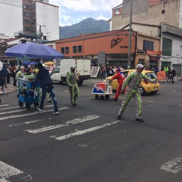
Figure 9: Ridículos

Figure 10: Ridículos 2
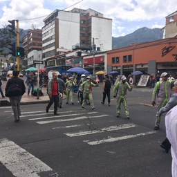
Figure 11: Ridículos 3
4.10 : Mercaderes del pasado
Hay algo atrayente acerca del Mercado de Pulgas de Las Nieves. Realmente, solo voy a mirar, porque me gustan las antiguedades, pero sospecho que la mayoría de las personas tampoco van a comprar. Aún no entiendo cómo recolectan todo lo que exponen. Debe ser muy difícil.
Una vez estuve a punto de comprar un grabadora multipista de cinta magnética, como las que usaban los músicos en los estudios de grabación de antes (cinta magnética). Costaba unos 600.000 COP. Se veía en buen estado. Hubiera valido la pena así no sirviera para nada. Era una máquina realmente imponente. Ni siquiera entiendo cómo la transportan hasta allí.
Uno puede encontrar todo tipo de cosas, desde anillos con patrones chibchas hasta vinilos de los Beatles. Es un sitio bastante histórico.
Figure 12: Una gomela
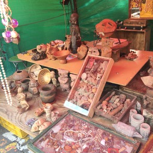
Figure 13: Estatuillas indígenas
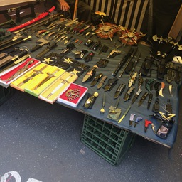
Figure 14: Armas
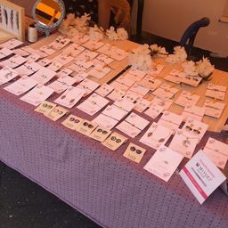
Figure 15: Incluso un negocio de "marca"
4.11 : Basquiat farsante
Los graffitis, en general, me parecen algo ridículos porque encubren la pobreza (económica y cultural) y la enmascaran de romanticismo. La única excepción sería graffitis de "vieja cepa", del tipo la "AUC mató a toda mi familia al frente mío", pero esos no son muy visibles.
Lo popular es lo otro, los de la 26. Hay algo bastante deshonesto en autoproclamarse la "capital mundial del graffiti" y subsidiar a los "artistas del graffiti". Cuando trabajaba con diseñadores gráficos notaba una afición al graffiti que nunca entendí, porque todos eran egresados de la Nacional. ¿Por qué un profesional pinta cosas en la calle? Creo que es un fenómeno que implica varios niveles.
Todo nace del hecho de la problemática de la carrera "Diseño Gráfico", pues no es realmente exclusivamente mercadeo, pero tampoco es exclusivamente arte (una palabra que también trae muchísimos problemas). El diseño gráfico siempre tiene que estar unido a algún "discurso", y el discurso tras el graffiti es tan general que cae de guantes a alguien que quiera ilustrar.
Otro nivel es la pobreza cultural, que nace de la pobreza económica. Un DaVinci solo florece bajo el cuidado de un Medici. Realmente a nadie le gusta pagar por nada, y mucho menos por el "arte" (digamos que es tentativamente todo aquello que no tiene una utilidad bajo una dinámica de consumo tradicional). Al tener trabajos mal pagos, la mayoría de los cuales no tienen la exigencia que merece haber estudiado algo por 4 o 5 años, obviamente pintar en la calle se va volviendo más atractivo. Me parece bien que se separe el street art del graffiti.
Miré los graffitis de Chapinero y me di cuenta que muchas tiendas ya no tienen un banner, sino un graffiti. Algunas veces alguien graffitea el graffiti oficial. Qué risa.
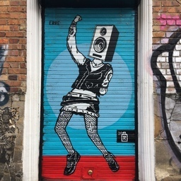
Figure 16: Un negocio "concede" que pinten el garaje.
4.12 : La Guerra fría (cuadro de la política bogotana)
La semana pasada me robaron el IPhone dentro de la Universidad. Le dije a un tipo de matemáticas lo que me había pasado y me respondió "eso es el karma, perro". Ya yo sabía por qué lo decía, pero igual le pregunté por qué me decía eso: tener IPhone es una ofensa a su persona. Eso es vivir en Bogotá.
Cualquier acontecimiento inevitablemente es analizado, en última instancia, bajo el espectro Petrismo - Uribismo, dentro del cual yo caigo dentro del último, por tener IPhone. Creo que todas las categorías analizadas hasta el momento son compatibles con esta tesis: culto/popular, colonia/ciudad, robapuestos de Transmilenio/ gente que tiene ceder el puesto, graffiti/arte, sostenibilidad/materialidad, etc.
Un caso de estudio más preciso es el drama de los colados en Transmilenio. Siempre habrá quien arguya que los colados son una condición natural inevitable: es la voz de la Historia que evidencia la injusticia sistémica. Una proposición con la que podría estar de acuerdo, solo si jamás hubiera visto la sonrisa idiota de la gente que se cuela. Es como que te roben el IPhone, un chiste light. Pretendamos que nada pasa, guardémoslo todo para la próxima marcha.
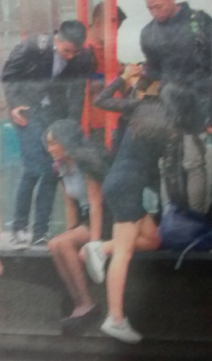
Figure 17: Los colados, esos buenos samaritanos, se cagan de la risa en minifalda